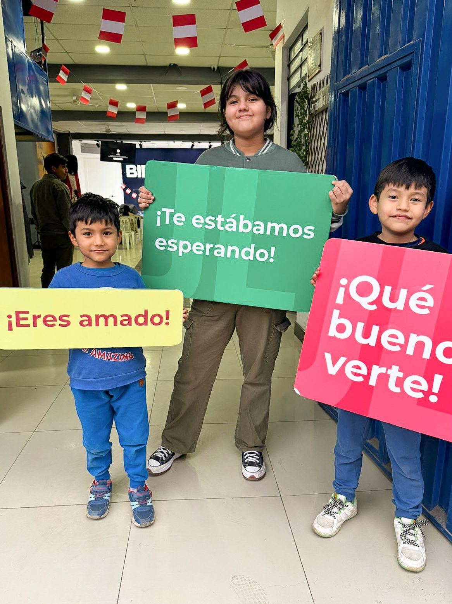
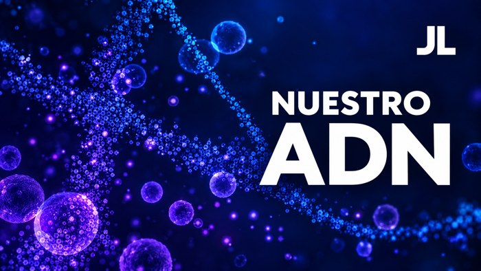
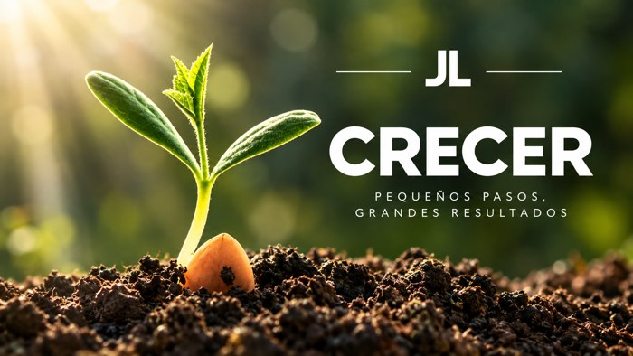
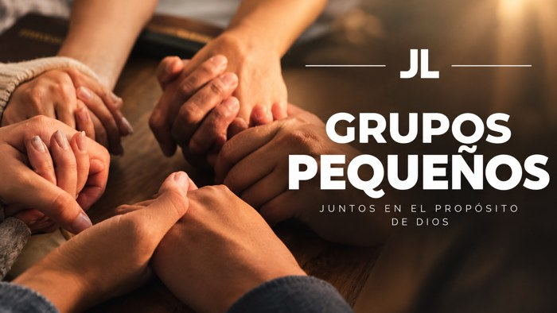

Diez cualidades que nos caracterizan como familia, en todo lugar en el que estemos.
Como hijos de Dios y como iglesia tenemos principios y valores arraigados a nuestra vida que no podemos dejar de cumplir. Así como podemos conocer a una persona al estudiar su ADN, nuestros valores y principios pasan a ser nuestro ADN espiritual, porque es con lo que nos podrían identificar como hijos de Dios.
El ADN es la molécula que contiene la información genética en todos los seres vivos. Es el "conjunto de cualidades inherentes e inamovibles de una persona, institución y otros objetos".
"Creencias, valores y comportamientos que se comparten en un grupo de personas." Como iglesia, fundamos una cultura en Jesucristo, con la certeza de que Él es modelo y ejemplo para todos nosotros.
Tú y yo somos hijos de Dios y su esencia corre por nuestras venas.
Mas vosotros sois linaje escogido, real sacerdocio, nación santa, pueblo adquirido por Dios, para que anunciéis las virtudes de aquel que os llamó de las tinieblas a su luz admirable.
1 PEDRO 2:9 · RV60Mas a todos los que le recibieron, a los que creen en su nombre, les dio potestad de ser hechos hijos de Dios; los cuales no son engendrados de sangre, ni de voluntad de carne, ni de voluntad de varón, sino de Dios.
JUAN 1:12-13 · RV60¡Somos hijos de Dios!
En nuestra Iglesia Cristiana "Jesús el Libertador" enseñamos y practicamos el ADN de Jesucristo, concentrado en diez cualidades que deben identificarnos y caracterizarnos en todo lugar en el que estemos. Así podremos cumplir la encomienda que Jesucristo nos dejó: estar unidos con una misma mentalidad, un mismo parecer, un mismo corazón — una familia de muchos, con diferencias y características únicas, pero con un mismo sentir.
El ADN de nuestra casa se compone deEstos valores, y el camino de todo nuevo creyente en nuestra casa, están desarrollados en cuatro libros disponibles para toda la familia de Jesús el Libertador.


